library("bayesrules")
library("bayesplot")
library("gt")
library("patchwork")
library("rstan")
library("rstanarm")
library("tidyverse")
knitr::opts_chunk$set(echo = TRUE)
rent_raw <- rent_raw <- readr::read_csv("rent.csv")
rent_df <- rent_raw |>
filter(price >= 800 & price <= 5000) |>
filter(sqft >= 500 & sqft <= 2500) |>
filter(year >= 2009) |>
filter(county %in% c("alameda", "contra costa"))
rent_df$county <- factor(rent_df$county,
levels = c("alameda", "contra costa"))
set.seed(320)
rent_df_for_stan <- rent_df |>
slice_sample(prop = 0.05)Extending Regression Models
Goal: Explore categorical variables, multivariate models, and interaction terms.
Data
source: TidyTuesday
2022-07-05
Pennington, Kate (2018). Bay Area Craigslist Rental Housing Posts, 2000-2018. Retrieved from this site.
- Craigslist listings
- Craigslist listings
Variables
Response Variable
\(Y\): price (monthly rent in USD)
Prediction
What is the monthly rent for a property that is about 1500 square feet in size?
Predictor Variables
- \(X_{1}\): area (in square feet)
- \(X_{2}\): year (discrete, numerical)
- \(X_{3}\): county
- \(X_{4}\): number of bedrooms
- \(X_{5}\): number of bathrooms
Recap: Area
\[Y = \beta_{0} + \beta_{1}X_{1}\]
- \(Y\): price (monthly rent in USD)
- \(X_{1}\): area (in square feet)
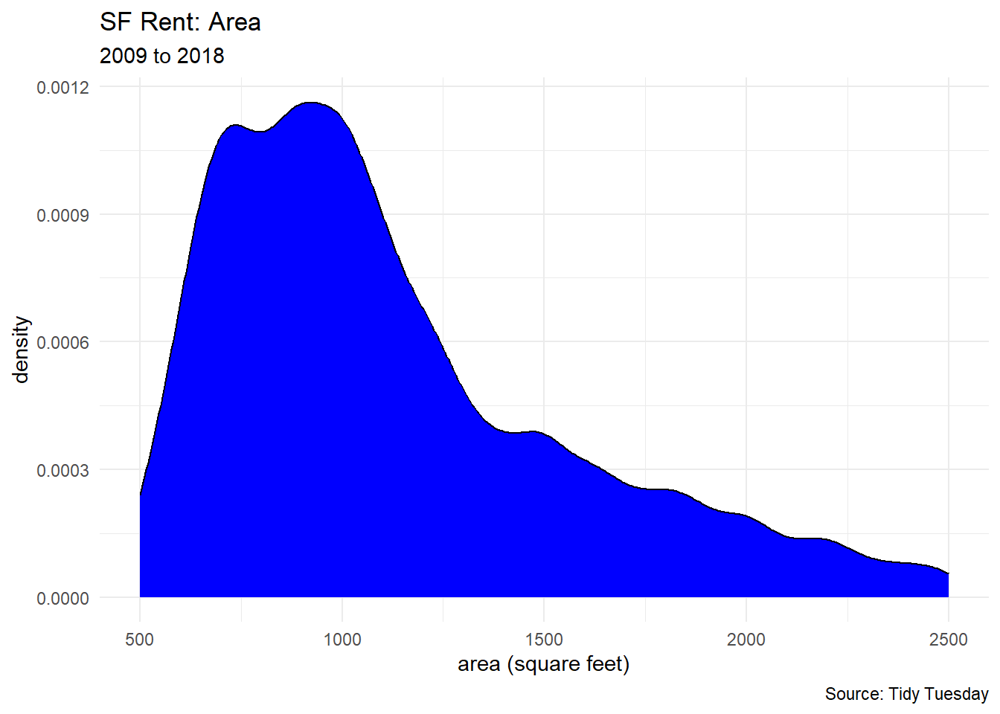
mod1 <- stan_glm(price ~ sqft,
data = rent_df_for_stan,
family = gaussian,
chains = 4, iter = 5000*2,
refresh = 0, seed = 320)
Function
model_diagnostics <- function(the_stan_model){
p1 <- bayesplot::mcmc_trace(the_stan_model, size = 0.1) +
labs(title = "MCMC Traces")
print(p1)
p2 <- bayesplot::mcmc_dens_overlay(the_stan_model) +
labs(title = "Density Plots")
print(p2)
p3 <- bayesplot::mcmc_acf(the_stan_model) +
labs(title = "Autocorrelations")
print(p3)
# effective sample size
print("Effective Sample Size:")
print(bayesplot::neff_ratio(the_stan_model))
# split-R metric
print("R-Hat")
print(bayesplot::rhat(the_stan_model))
}model_diagnostics(mod1)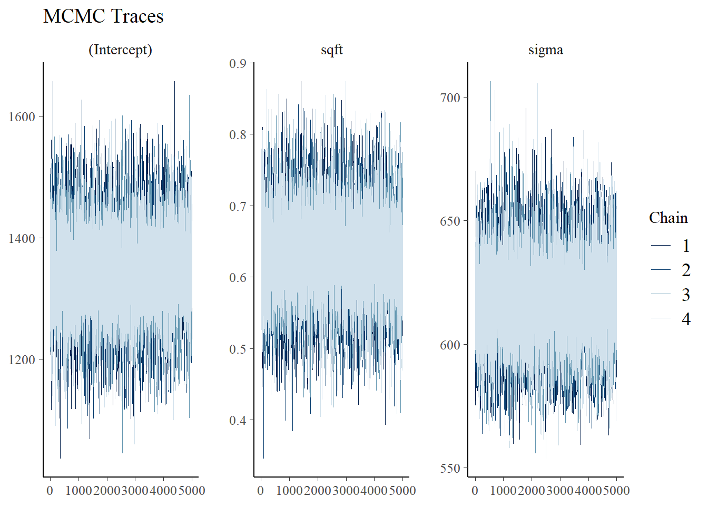
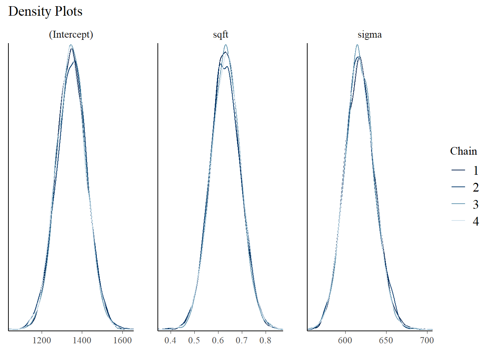
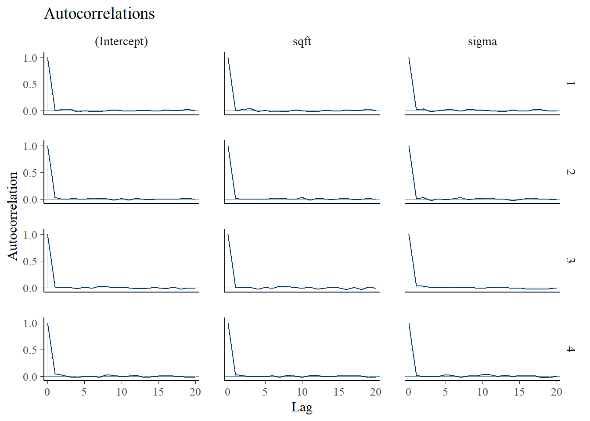
(Intercept) sqft sigma
0.92690 0.94080 0.90635
(Intercept) sqft sigma
1.0003567 1.0003625 0.9999335 bayesplot::pp_check(mod1, nreps = 50) +
labs(title = "Posterior Predictive Check",
subtitle = "Model: price versus area",
caption = "SML 320")broom.mixed::tidy(mod1,
effects = c("fixed", "aux"),
conf.int = TRUE, conf.level = 0.90) |>
mutate_if(is.numeric, round, digits = 4)# A tibble: 4 × 5
term estimate std.error conf.low conf.high
<chr> <dbl> <dbl> <dbl> <dbl>
1 (Intercept) 1347. 73.8 1226. 1470.
2 sqft 0.631 0.0627 0.528 0.736
3 sigma 617. 18.3 588. 649.
4 mean_PPD 2044. 36.8 1983. 2104. In context, the intercept term somewhat implies that the fixed costs (e.g. taxes, insurance) are about $1350/month before the predictor variables.
Recap: Year
\[Y = \beta_{0} + \beta_{2}X_{2}\]
- \(Y\): price (monthly rent in USD)
- \(X_{2}\): year (discrete, numerical)
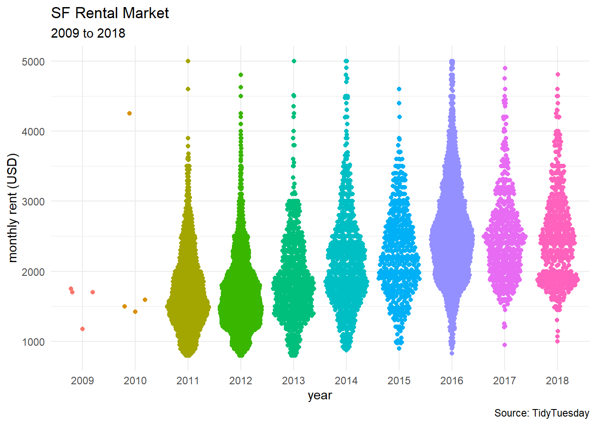
mod2 <- stan_glm(price ~ year,
data = rent_df_for_stan,
family = gaussian,
chains = 4, iter = 5000*2,
refresh = 0, seed = 320)model_diagnostics(mod2)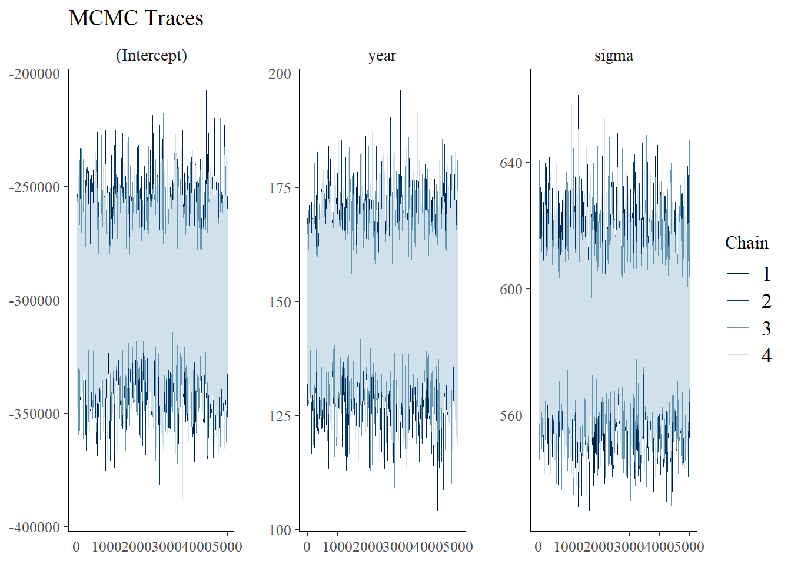
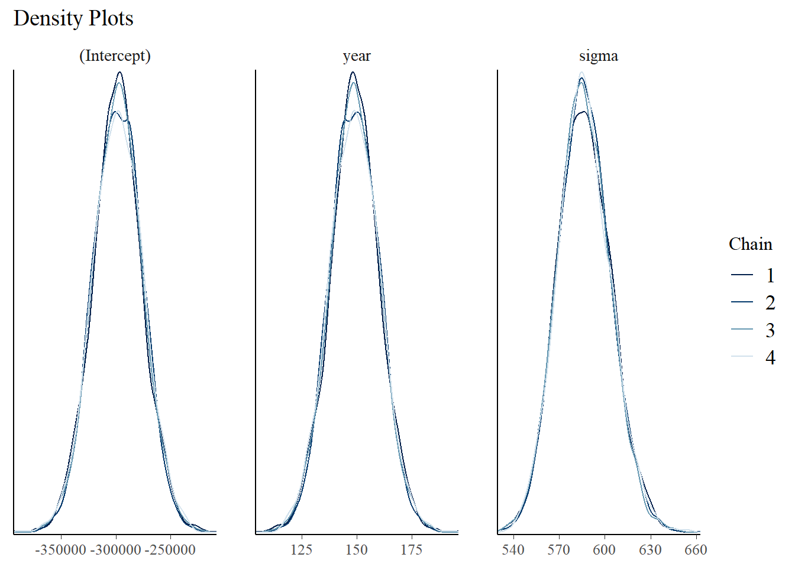
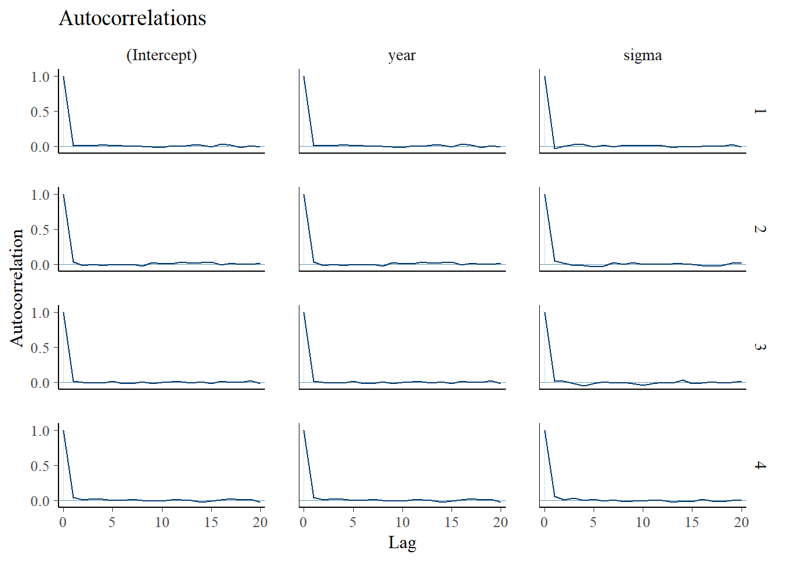
[1] "Effective Sample Size:"
(Intercept) year sigma
0.94665 0.94665 0.92865
[1] "R-Hat"
(Intercept) year sigma
1.000015 1.000015 1.000083 bayesplot::pp_check(mod2, nreps = 50) +
labs(title = "Posterior Predictive Check",
subtitle = "Model: price versus year",
caption = "SML 320")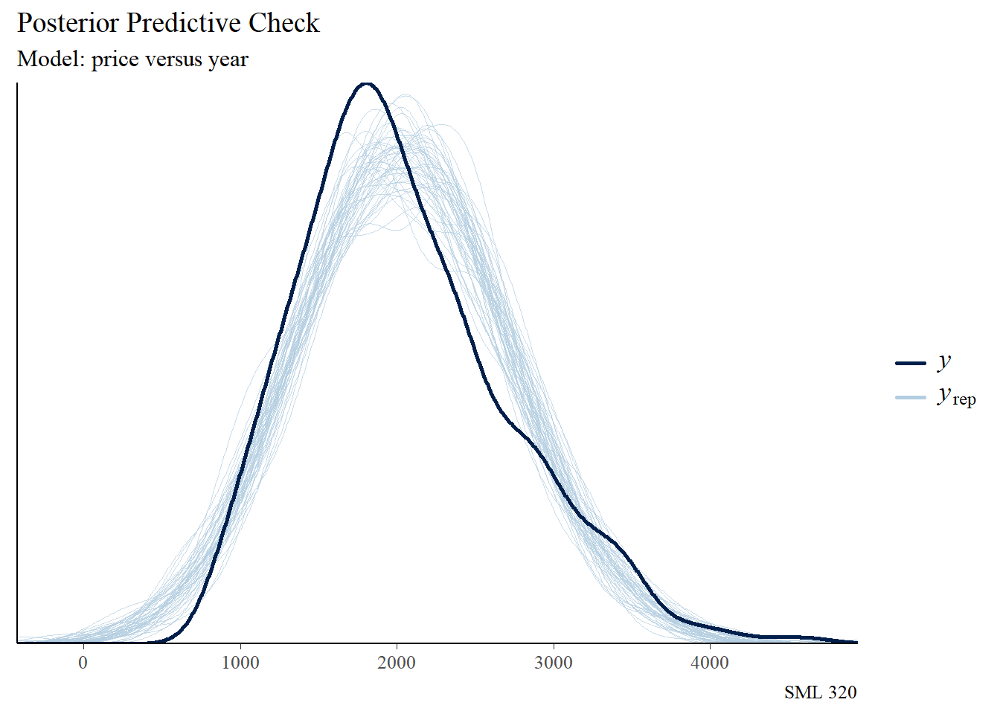
broom.mixed::tidy(mod2,
effects = c("fixed", "aux"),
conf.int = TRUE, conf.level = 0.90) |>
mutate_if(is.numeric, round, digits = 4)# A tibble: 4 × 5
term estimate std.error conf.low conf.high
<chr> <dbl> <dbl> <dbl> <dbl>
1 (Intercept) -298002. 22595. -335262. -260276.
2 year 149. 11.2 130. 168.
3 sigma 586. 17.4 559. 616.
4 mean_PPD 2044. 35.2 1987. 2102.Since zero in not in the credible interval for \(\beta_{2}\), we have some evidence of a positive relationship between year and the monthly price.
Categorical Variables
Indicator Variable
\[X_{3} = \begin{cases} 1, & \text{Contra Costa County} \\ 0, & \text{Alameda County} \end{cases}\]
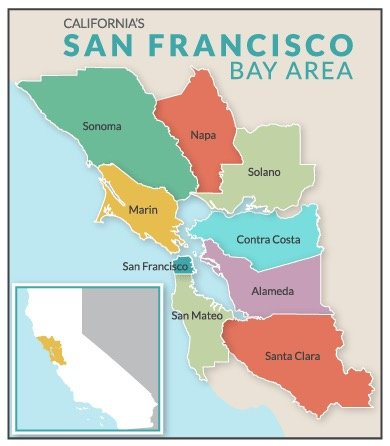
Local Mean
\[\mu_{i} = \beta_{0} + \beta_{1}X_{3} \quad\text{with}\quad X_{3} = \begin{cases} 1, & \text{Contra Costa County} \\ 0, & \text{Alameda County} \end{cases}\]
- Alameda: \(\beta_{0} + \beta_{1}(0) = \beta_{0}\)
- Contra Costa: \(\beta_{0} + \beta_{1}(1) = \beta_{0} + \beta_{1}\)
- standard deviation \(\sigma\) still represents variability at a given \(X_{3}\) value.
County
\[Y = \beta_{0} + \beta_{3}X_{3}\]
- \(Y\): price (monthly rent in USD)
- \(X_{3}\): county
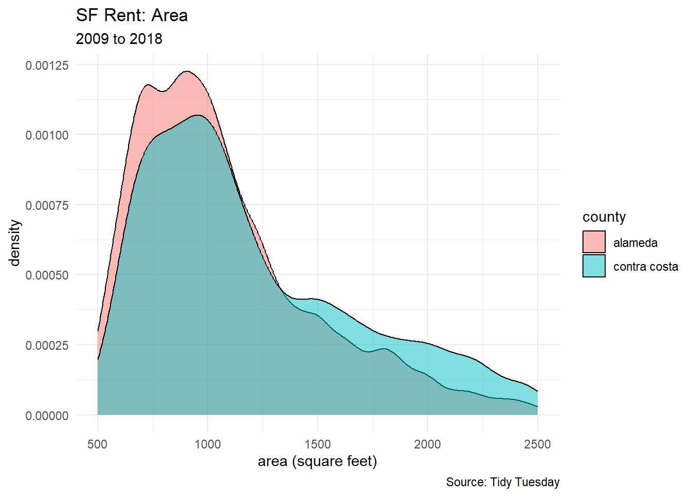
mod3 <- stan_glm(price ~ county,
data = rent_df_for_stan,
family = gaussian,
chains = 4, iter = 5000*2,
refresh = 0, seed = 320)model_diagnostics(mod3)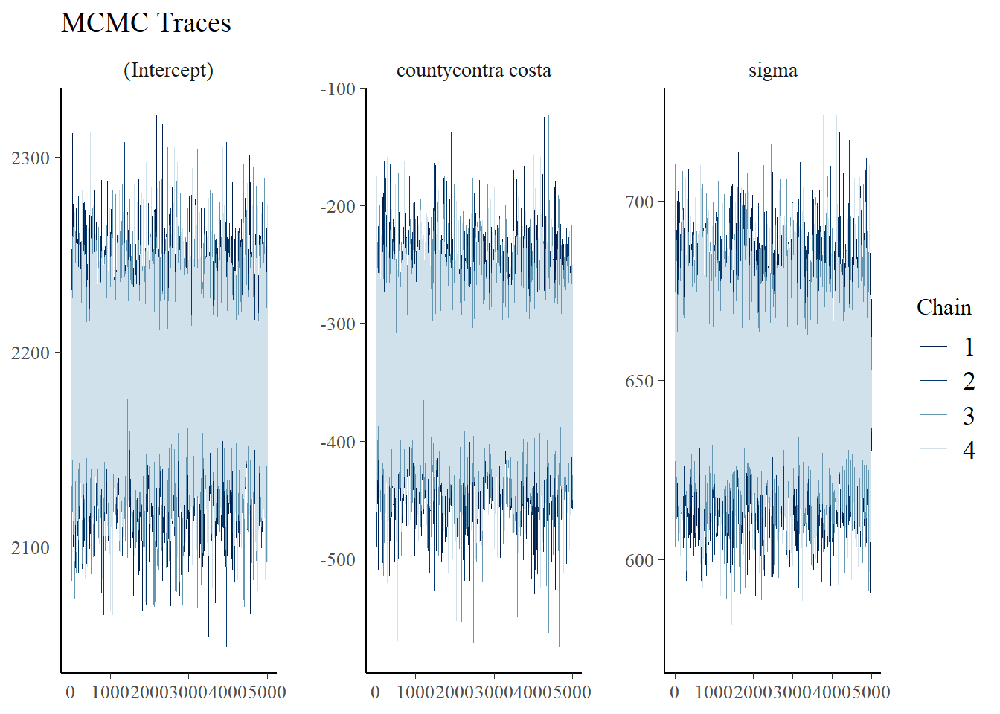
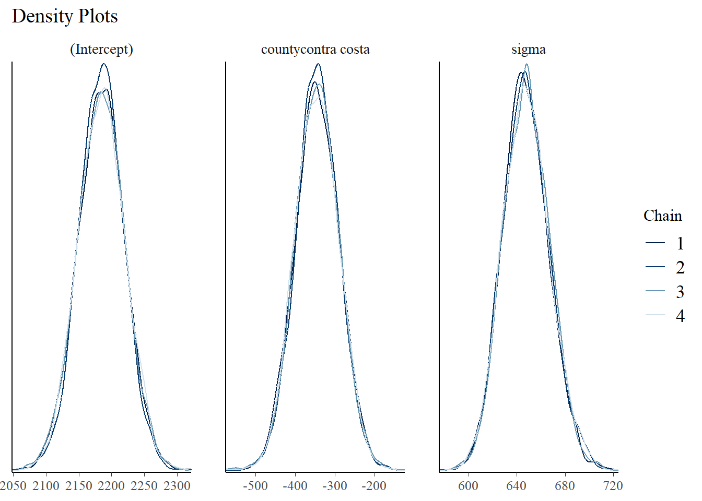
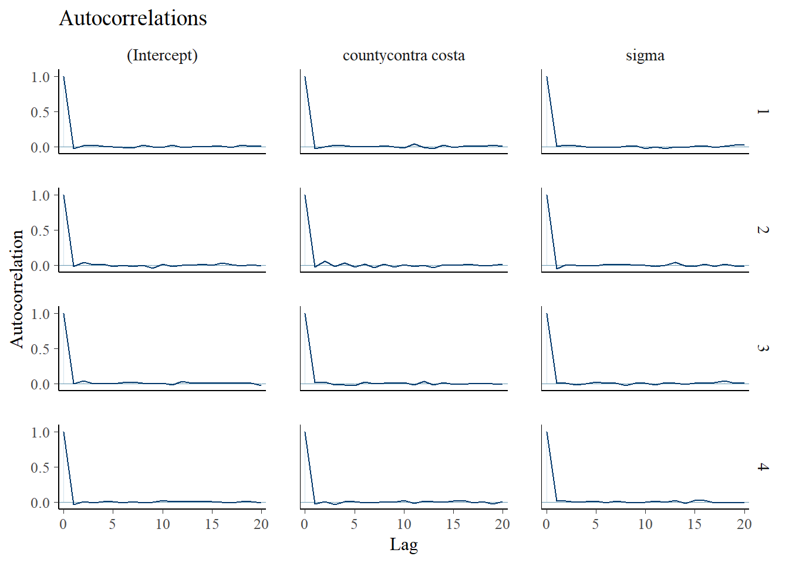
[1] "Effective Sample Size:"
(Intercept) countycontra costa sigma
0.98335 1.02215 0.97535
[1] "R-Hat"
(Intercept) countycontra costa sigma
0.9999912 1.0001831 1.0001783 bayesplot::pp_check(mod3, nreps = 50) +
labs(title = "Posterior Predictive Check",
subtitle = "Model: price versus county",
caption = "SML 320")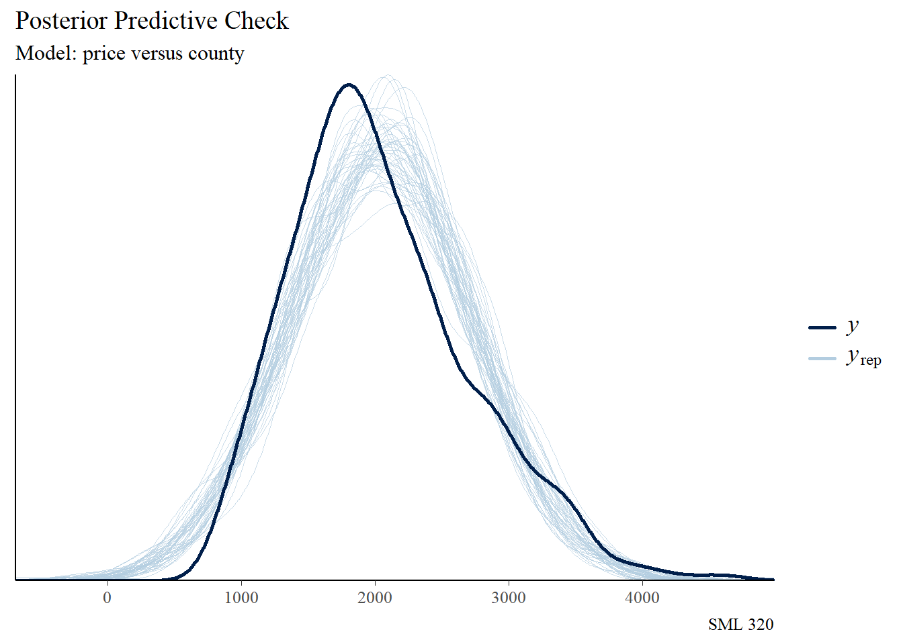
broom.mixed::tidy(mod3,
effects = c("fixed", "aux"),
conf.int = TRUE, conf.level = 0.90) |>
mutate_if(is.numeric, round, digits = 4)# A tibble: 4 × 5
term estimate std.error conf.low conf.high
<chr> <dbl> <dbl> <dbl> <dbl>
1 (Intercept) 2185. 35.4 2126. 2242.
2 countycontra costa -344. 54.8 -434. -254.
3 sigma 647. 19.2 617. 680.
4 mean_PPD 2044. 38.7 1980. 2108.This model placed properties in Alameda County as the baseline for analyses. The coefficient on our categorical variable, \(\beta_{3}\), indicates that rents are about $350/month less in Contra Costa country (on average) by comparison.
Multivariate Regression
\[Y = \beta_{0} + \beta_{1}X_{1} + \beta_{2}X_{2} + \beta_{3}X_{3} + ...\]
Bed and Bath
\[Y = \beta_{0} + \beta_{1}X_{1} + \beta_{4}X_{4} + \beta_{5}X_{5}\]
- \(X_{1}\): area (in square feet)
- \(X_{4}\): number of bedrooms
- \(X_{5}\): number of bathrooms
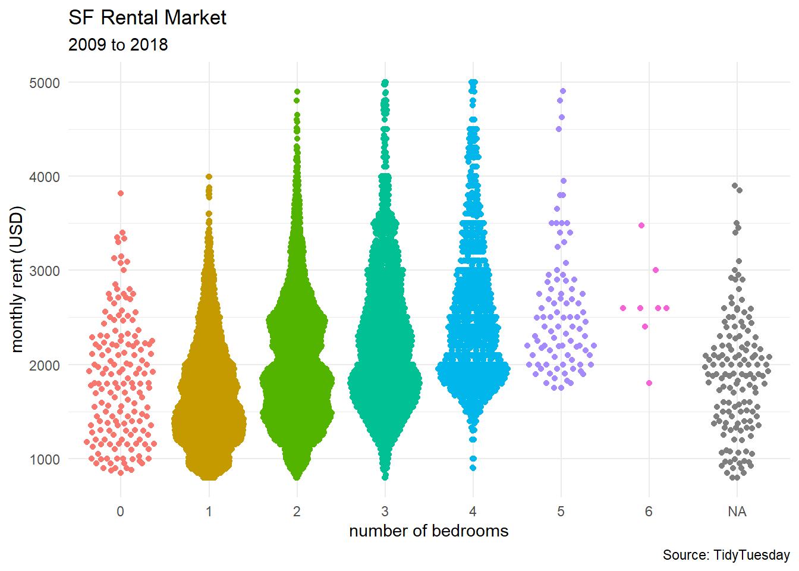
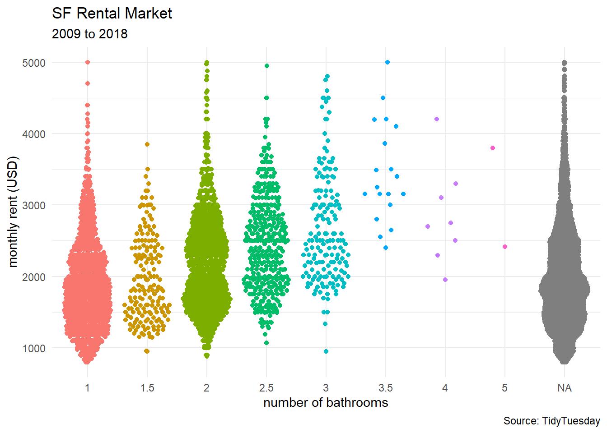
mod4 <- stan_glm(price ~ sqft + beds + baths,
data = rent_df_for_stan,
family = gaussian,
chains = 4, iter = 5000*2,
refresh = 0, seed = 320)model_diagnostics(mod4)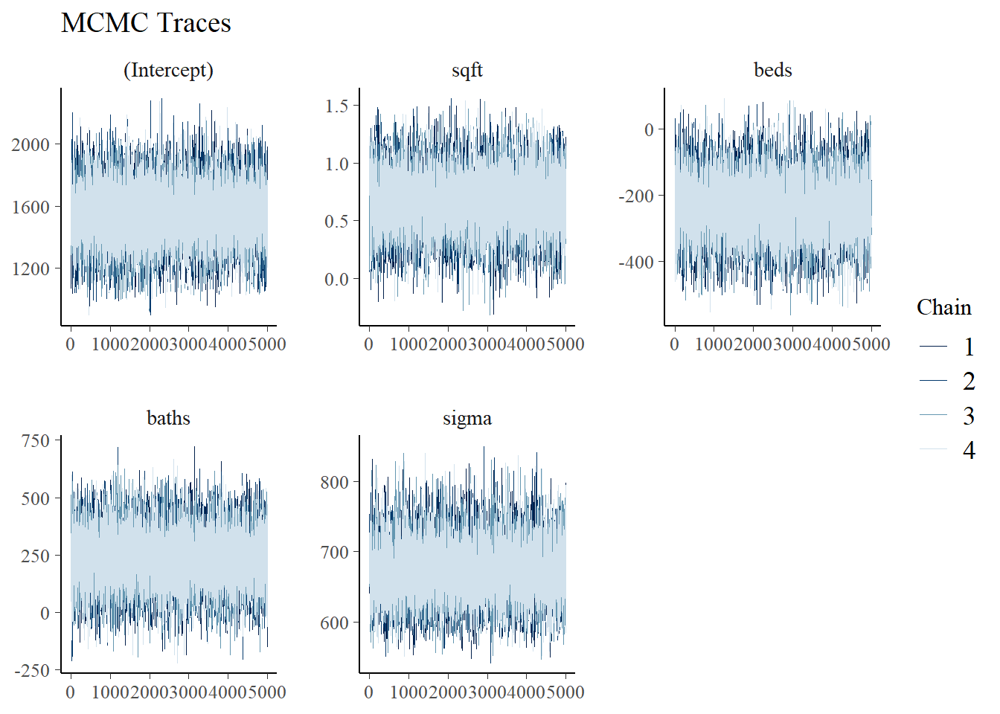
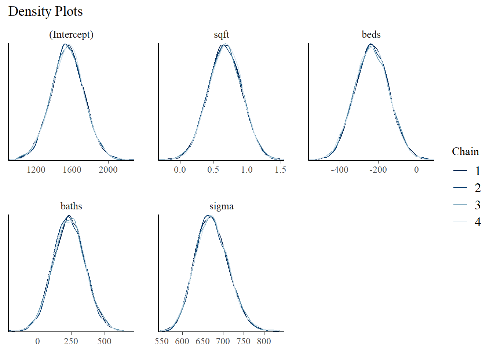
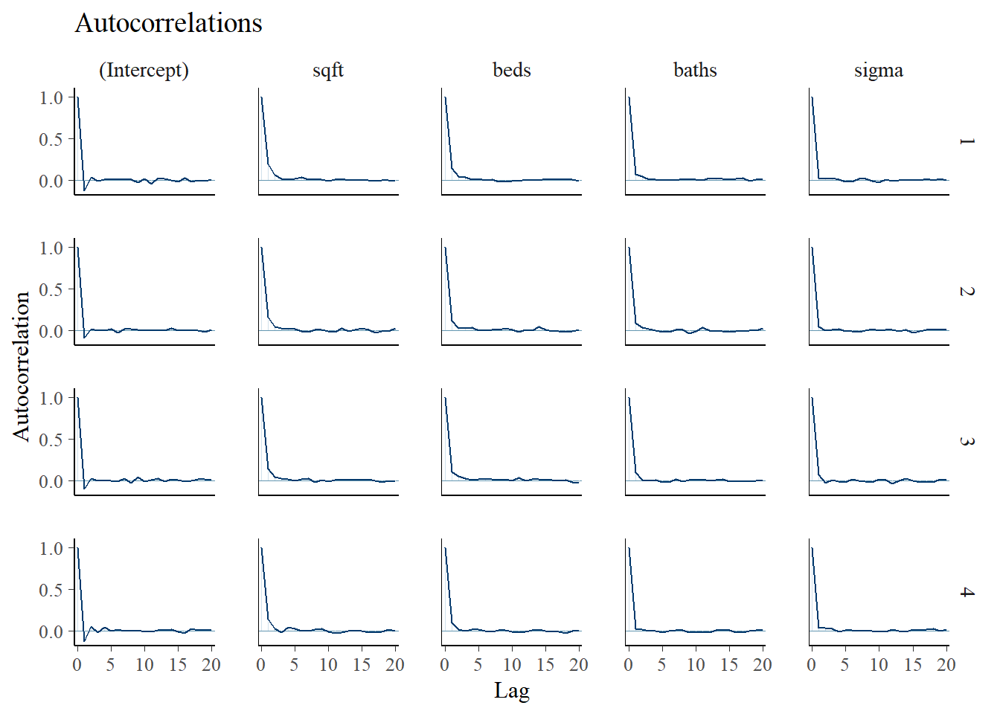
[1] "Effective Sample Size:"
(Intercept) sqft beds baths sigma
1.14380 0.65705 0.71220 0.83715 0.89015
[1] "R-Hat"
(Intercept) sqft beds baths sigma
0.9999506 1.0002182 1.0000545 1.0004859 0.9999406 bayesplot::pp_check(mod4, nreps = 50) +
labs(title = "Posterior Predictive Check",
subtitle = "Model: price versus beds and baths",
caption = "SML 320")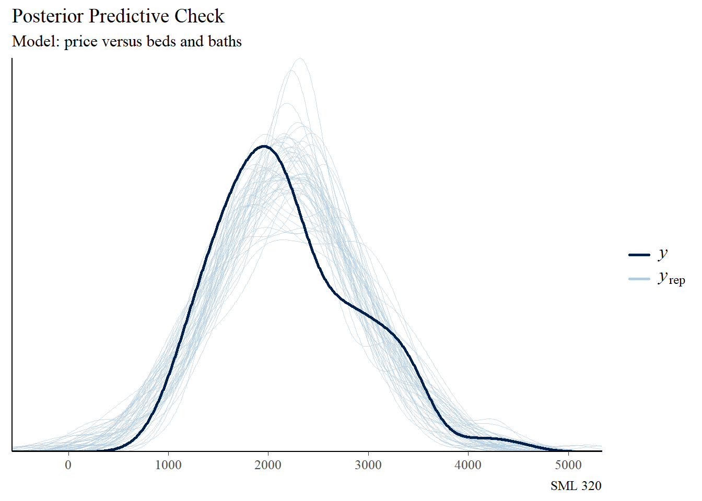
broom.mixed::tidy(mod4,
effects = c("fixed", "aux"),
conf.int = TRUE, conf.level = 0.90) |>
mutate_if(is.numeric, round, digits = 4)# A tibble: 6 × 5
term estimate std.error conf.low conf.high
<chr> <dbl> <dbl> <dbl> <dbl>
1 (Intercept) 1549. 180. 1245. 1851.
2 sqft 0.671 0.254 0.254 1.08
3 beds -234. 89.7 -382. -86.8
4 baths 233. 120. 38.1 431.
5 sigma 671. 40.8 609. 742.
6 mean_PPD 2196. 78.6 2066. 2324. Commentary: the negative coefficient (and credible interval values) for the number of beds predictor variable is quite curious. Does rent decrease as the number of beds increases?
Interaction Terms
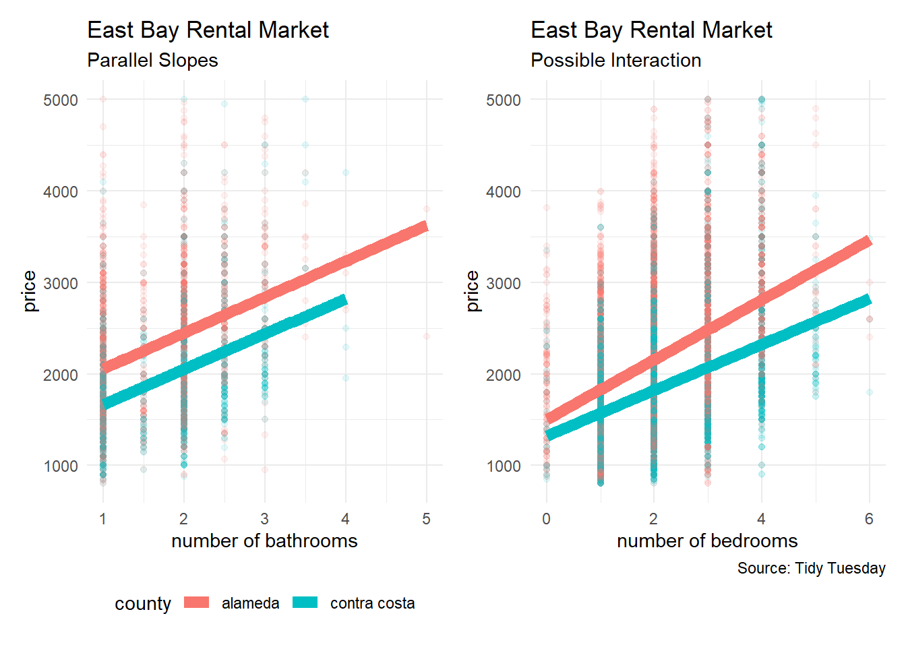
p1 <- rent_df |>
ggplot(aes(x = baths, y = price, color = county, group = county)) +
geom_point(alpha = 0.10) +
geom_smooth(method = "lm", formula = "y~x",
linewidth = 3, se =FALSE) +
labs(title = "East Bay Rental Market",
subtitle = "Parallel Slopes",
x = "number of bathrooms") +
theme_minimal() +
theme(legend.position = "bottom")
p2 <- rent_df |>
ggplot(aes(x = beds, y = price, color = county, group = county)) +
geom_point(alpha = 0.10) +
geom_smooth(method = "lm", formula = "y~x",
linewidth = 3, se =FALSE) +
labs(title = "East Bay Rental Market",
subtitle = "Possible Interaction",
caption = "Source: Tidy Tuesday",
x = "number of bedrooms") +
theme_minimal() +
theme(legend.position = "none")
# patchwork
p1 + p2County Beds
\[Y = \beta_{0} + \beta_{3}X_{3} + \beta_{5}X_{5} + \beta_{6}X_{3}X_{5}\]
- \(X_{3}\): county
- \(X_{5}\): number of bathrooms
mod5 <- stan_glm(price ~ county + beds + county:beds,
data = rent_df_for_stan,
family = gaussian,
chains = 4, iter = 5000*2,
refresh = 0, seed = 320)model_diagnostics(mod5)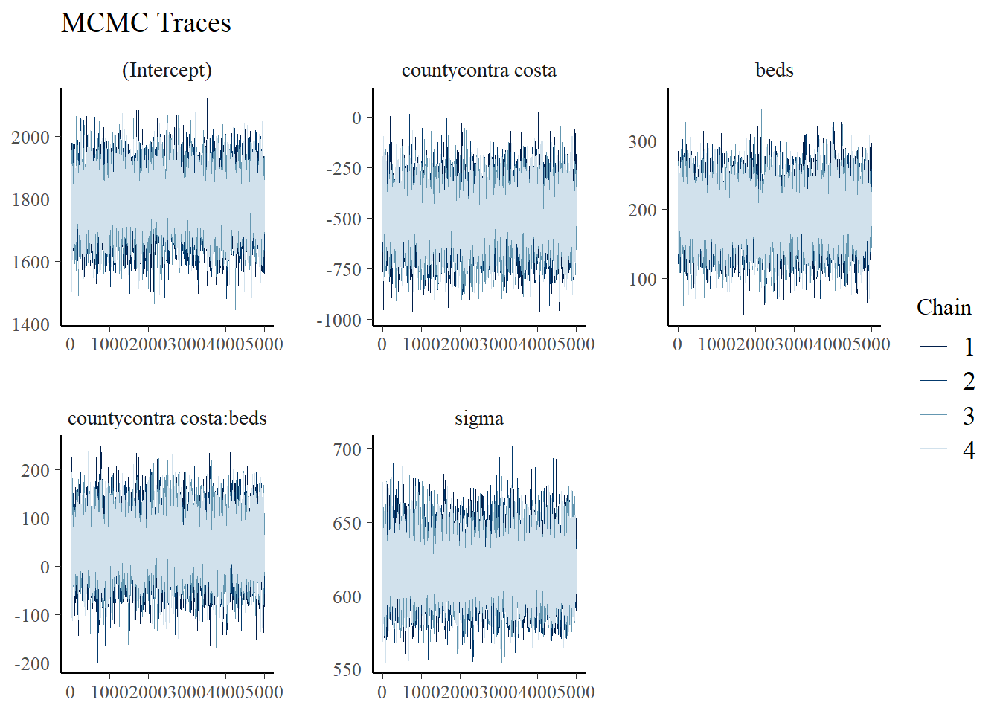
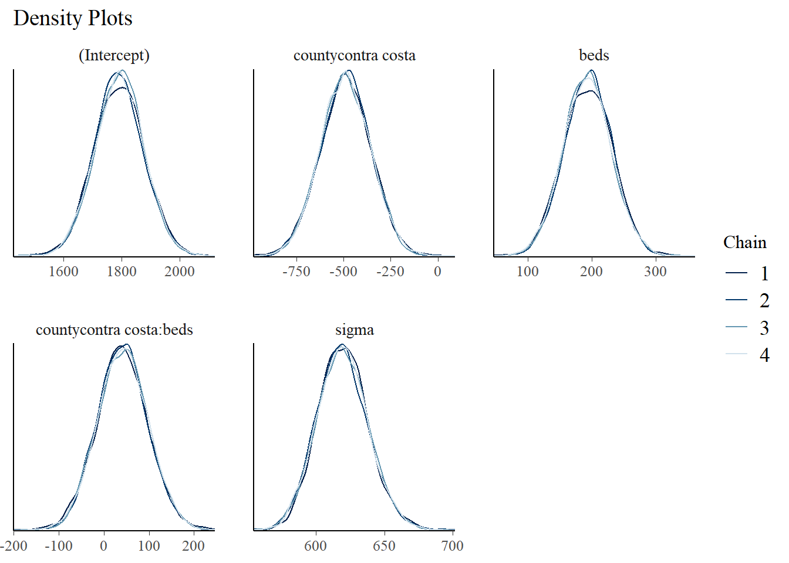
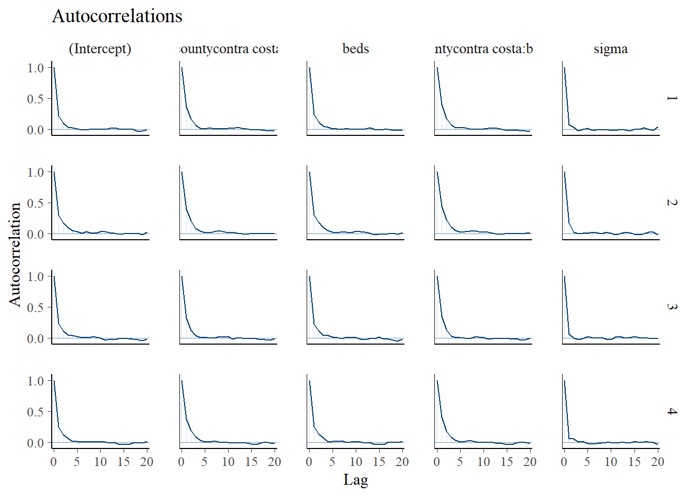
[1] "Effective Sample Size:"
(Intercept) countycontra costa beds
0.49230 0.41325 0.47550
countycontra costa:beds sigma
0.39545 0.81385
[1] "R-Hat"
(Intercept) countycontra costa beds
1.0001283 0.9999925 1.0001546
countycontra costa:beds sigma
1.0000780 1.0003421 bayesplot::pp_check(mod5, nreps = 50) +
labs(title = "Posterior Predictive Check",
subtitle = "Model: interation between county and beds",
caption = "SML 320")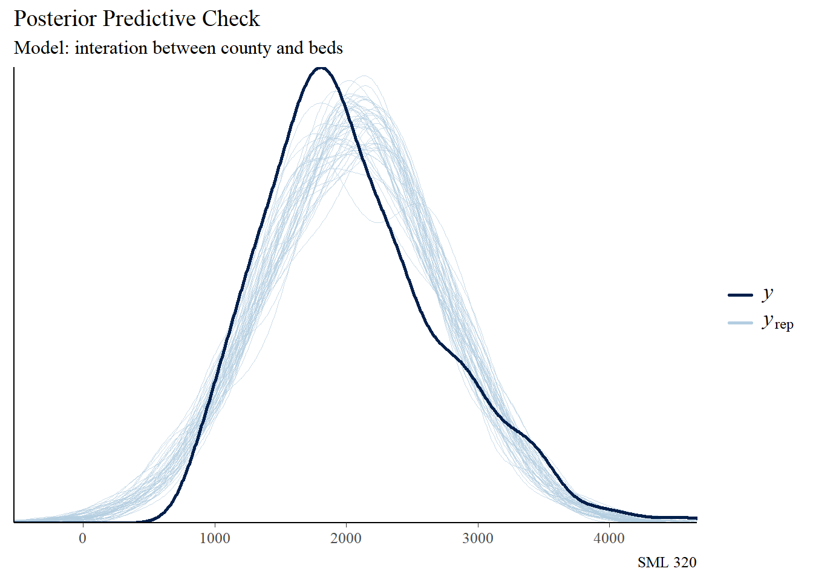
broom.mixed::tidy(mod5,
effects = c("fixed", "aux"),
conf.int = TRUE, conf.level = 0.90) |>
mutate_if(is.numeric, round, digits = 4)# A tibble: 6 × 5
term estimate std.error conf.low conf.high
<chr> <dbl> <dbl> <dbl> <dbl>
1 (Intercept) 1791. 84.4 1652. 1931.
2 countycontra costa -490. 133. -711. -270.
3 beds 193. 38.1 131. 256.
4 countycontra costa:beds 41.5 55.7 -50.6 135.
5 sigma 619. 18.7 589. 651.
6 mean_PPD 2043. 37.6 1982. 2105.Since zero is in the credible interval for the interaction term, it might be the case that the interaction between those two variables are not important.
All Predictors
\[Y = \beta_{0} + \beta_{1}X_{1} + \beta_{2}X_{2} + \beta_{3}X_{3} + \beta_{4}X_{4} + \beta_{5}X_{5}\]
- \(X_{1}\): area (in square feet)
- \(X_{2}\): year (discrete, numerical)
- \(X_{3}\): county
- \(X_{4}\): number of bedrooms
- \(X_{5}\): number of bathrooms
rent_df_for_all <- rent_df_for_stan |>
select(price, sqft, year, county, beds, baths)mod6 <- stan_glm(price ~ ., # price explained by all predictor vars
data = rent_df_for_all,
family = gaussian,
chains = 4, iter = 5000*2,
refresh = 0, seed = 320)model_diagnostics(mod6)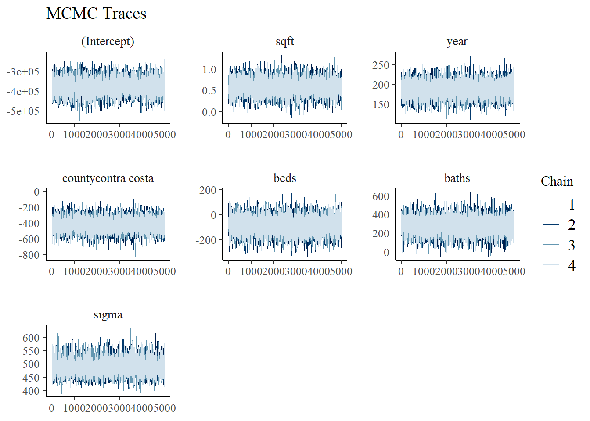
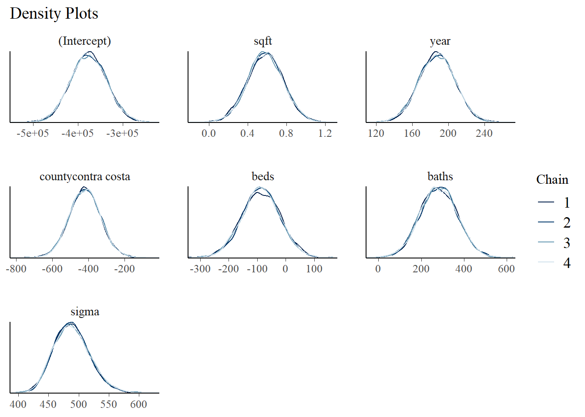
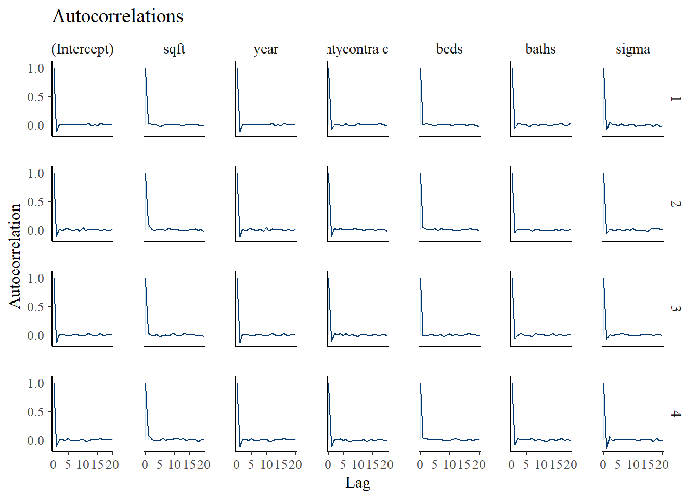
[1] "Effective Sample Size:"
(Intercept) sqft year countycontra costa
1.24320 0.87375 1.24320 1.14510
beds baths sigma
0.94375 1.10160 1.12780
[1] "R-Hat"
(Intercept) sqft year countycontra costa
0.9999691 0.9999978 0.9999689 0.9998384
beds baths sigma
1.0000905 0.9998943 1.0002140 bayesplot::pp_check(mod6, nreps = 50) +
labs(title = "Posterior Predictive Check",
subtitle = "Model: all predictor variables",
caption = "SML 320")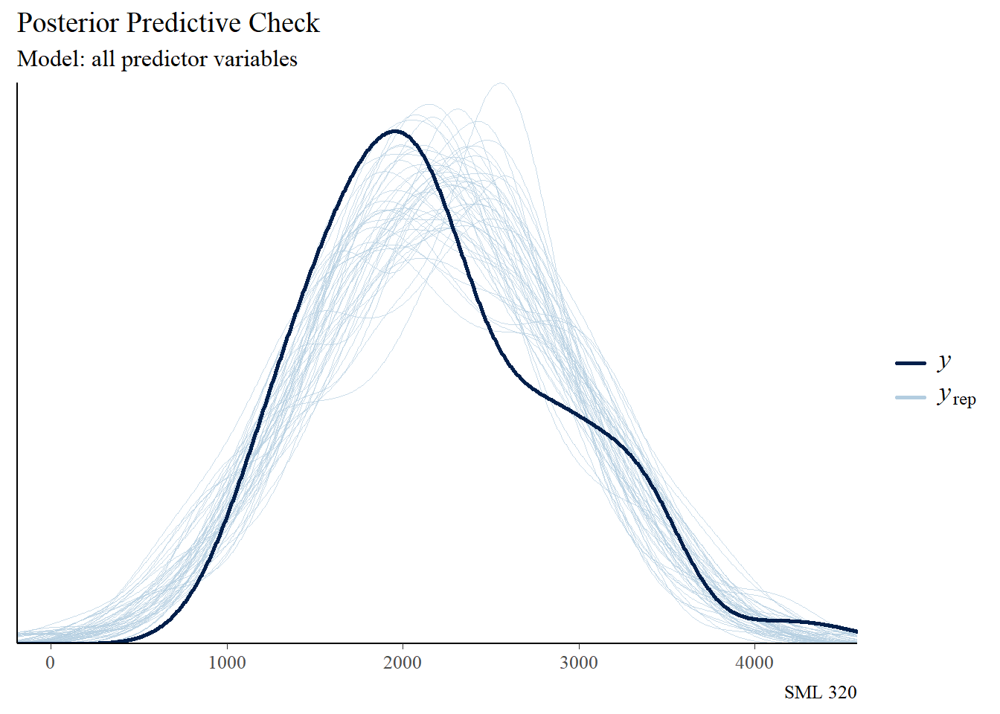
broom.mixed::tidy(mod6,
effects = c("fixed", "aux"),
conf.int = TRUE, conf.level = 0.90) |>
mutate_if(is.numeric, round, digits = 4)# A tibble: 8 × 5
term estimate std.error conf.low conf.high
<chr> <dbl> <dbl> <dbl> <dbl>
1 (Intercept) -376298. 40575. -442107. -309907.
2 sqft 0.582 0.184 0.276 0.886
3 year 188. 20.1 155. 220.
4 countycontra costa -420. 85.5 -562. -279.
5 beds -87.6 66.0 -199. 22.2
6 baths 281. 87.9 140. 424.
7 sigma 487. 29.8 443. 540.
8 mean_PPD 2196. 57.9 2100. 2291. As these models become more complex, observe that the coefficients—and their interpretations—change.
Model Selection
rent_df_for_ML <- rent_df |>
select(price, sqft, year, county, beds, baths)|>
filter(!is.na(sqft)) |>
filter(!is.na(beds)) |>
filter(!is.na(baths)) |>
slice_sample(prop = 0.05)
mod1_cv <- bayesrules::prediction_summary_cv(
model = mod1, data = rent_df_for_ML, k = 10)
mod2_cv <- bayesrules::prediction_summary_cv(
model = mod2, data = rent_df_for_ML, k = 10)
mod3_cv <- bayesrules::prediction_summary_cv(
model = mod3, data = rent_df_for_ML, k = 10)
mod4_cv <- bayesrules::prediction_summary_cv(
model = mod4, data = rent_df_for_ML, k = 10)
mod5_cv <- bayesrules::prediction_summary_cv(
model = mod5, data = rent_df_for_ML, k = 10)
mod6_cv <- bayesrules::prediction_summary_cv(
model = mod6, data = rent_df_for_ML, k = 10)| ML on East Bay Rental Markets | ||||
| Cross validation metrics | ||||
| model | mae | mae_scaled | within_50 | within_95 |
|---|---|---|---|---|
| 1 | 501.74 | 0.76 | 0.46 | 0.97 |
| 2 | 448.55 | 0.74 | 0.49 | 0.96 |
| 3 | 505.80 | 0.74 | 0.47 | 0.97 |
| 4 | 503.26 | 0.77 | 0.42 | 0.95 |
| 5 | 508.02 | 0.78 | 0.44 | 0.96 |
| 6 | 286.84 | 0.60 | 0.55 | 0.94 |
df_for_metrics <- rbind(mod1_cv$cv, mod2_cv$cv, mod3_cv$cv,
mod4_cv$cv, mod5_cv$cv, mod6_cv$cv)
df_for_metrics |>
mutate(model = 1:6, .before = "mae") |>
gt() |>
cols_align(align = "center", columns = everything()) |>
fmt_number(columns = -model,
decimals = 2) |>
tab_header(
title = md("**ML on East Bay Rental Markets**"),
subtitle = "Cross validation metrics"
) |>
tab_style(
style = list(
cell_fill(color = "yellow"),
cell_text(weight = "bold")
),
locations = cells_body(
columns = everything(),
rows = mae == min(mae)
)
) |>
tab_style(
style = list(
cell_fill(color = "lightblue")
),
locations = cells_body(
columns = model,
rows = everything()
)
)Prediction
Since the median absolute error (scaled or unscaled) was the lowest for mod6 (out of the models that we looked at today), we will proceed with this choice as the best model.
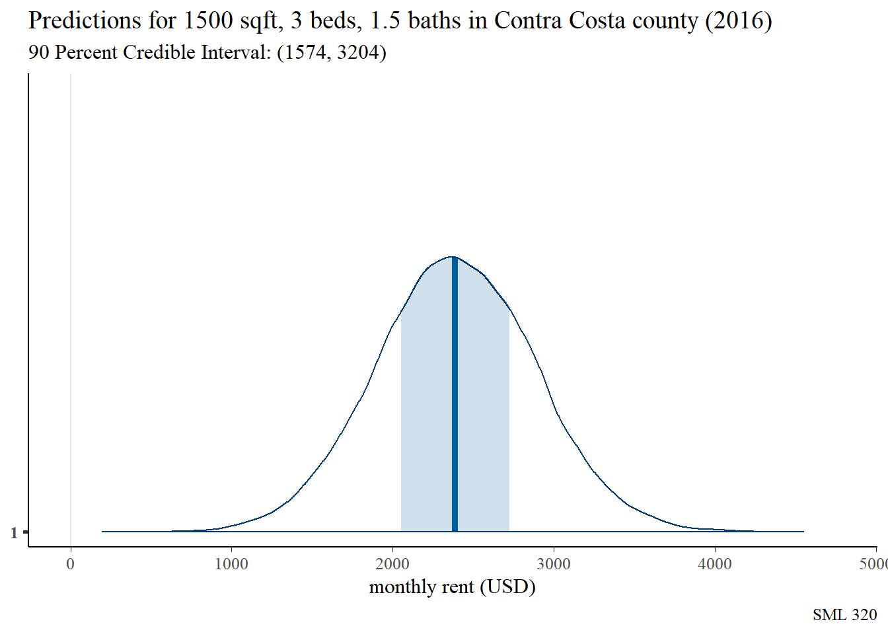
these_predictions <- rstanarm::posterior_predict(
mod6, newdata = data.frame(sqft = 1500,
year = 2016,
county = "contra costa",
beds = 3,
baths = 1.5))
credible_interval <- round(quantile(these_predictions, c(0.05, 0.95)))
subtitle_string <- paste0("90 Percent Credible Interval: (",
credible_interval[1], ", ",
credible_interval[2], ")")
bayesplot::mcmc_areas(these_predictions) +
labs(title = "Predictions for 1500 sqft, 3 beds, 1.5 baths in Contra Costa county (2016)",
subtitle = subtitle_string,
caption = "SML 320",
x = "monthly rent (USD)")Time Series
SF Rental Market
- average rent by day
- one average price per day
- \(n = 399\) data points
rent_df <- rent_raw |>
filter(price >= 800 & price <= 5000) |>
filter(sqft >= 500 & sqft <= 2500) |>
filter(year >= 2009)
rent_ts <- rent_df |>
select(year, date, price) |>
group_by(date) |>
mutate(avg_price = mean(price, na.rm = TRUE)) |>
ungroup() |>
select(year, date, avg_price) |>
distinct() |>
arrange(date)
# convert string to YYYY/MM/DD date format
rent_ts$date <- lubridate::ymd(rent_ts$date) 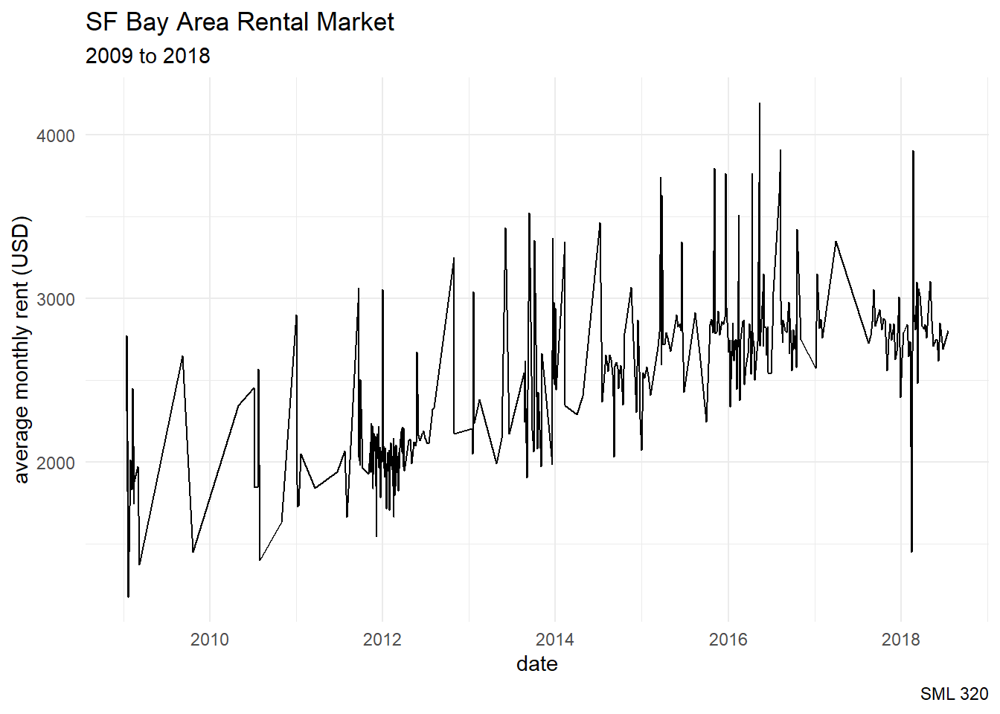
rent_ts |>
ggplot(aes(x = date, y = avg_price)) +
geom_line() +
labs(title = "SF Bay Area Rental Market",
subtitle = "2009 to 2018",
caption = "SML 320",
x = "date", y = "average monthly rent (USD)") +
theme_minimal()Causal Impact
training over pre-intervention period
testing over post-intervention period
the
CausalImpactfunction- assembles structural time-series model
- performs posterior inference
- computes estimates for casual effect
Claim 1: Change in Market in 2016
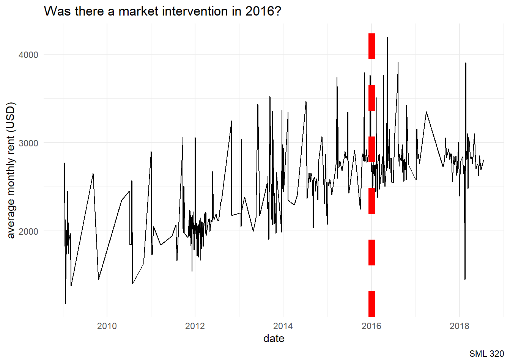
rent_ts |>
ggplot(aes(x = date, y = avg_price)) +
geom_line() +
geom_vline(xintercept = lubridate::ymd("20160101"),
color = "red", linetype = 2, linewidth = 3) +
labs(title = "Was there a market intervention in 2016?",
caption = "SML 320",
x = "date", y = "average monthly rent (USD)") +
theme_minimal()intervention_index <- which.max(rent_ts$year >= 2016)
pre_intervention <- c(1, intervention_index-1)
post_intervention <- c(intervention_index, nrow(rent_ts))
ts_impact <- CausalImpact::CausalImpact(rent_ts$avg_price,
pre_intervention,
post_intervention)summary(ts_impact)Posterior inference {CausalImpact}
Average Cumulative
Actual 2821 335689
Prediction (s.d.) 2819 (104) 335481 (12414)
95% CI [2625, 3031] [312434, 360678]
Absolute effect (s.d.) 1.7 (104) 207.6 (12414)
95% CI [-210, 195] [-24989, 23255]
Relative effect (s.d.) 0.2% (3.7%) 0.2% (3.7%)
95% CI [-6.9%, 7.4%] [-6.9%, 7.4%]
Posterior tail-area probability p: 0.48075
Posterior prob. of a causal effect: 52%
For more details, type: summary(impact, "report")The plot of an “impact” object returns a ggplot object!
plot(ts_impact)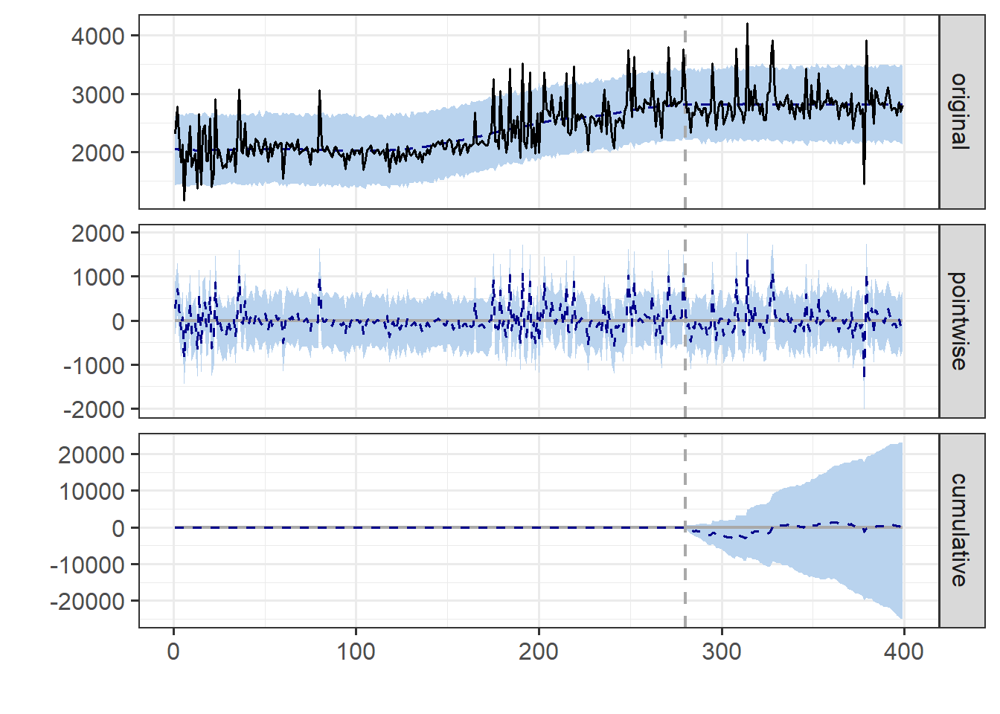
summary(ts_impact, "report")Analysis report {CausalImpact}
During the post-intervention period, the response variable had an average value of approx. 2.82K. In the absence of an intervention, we would have expected an average response of 2.82K. The 95% interval of this counterfactual prediction is [2.63K, 3.03K]. Subtracting this prediction from the observed response yields an estimate of the causal effect the intervention had on the response variable. This effect is 0.00K with a 95% interval of [-0.21K, 0.20K]. For a discussion of the significance of this effect, see below.
Summing up the individual data points during the post-intervention period (which can only sometimes be meaningfully interpreted), the response variable had an overall value of 335.69K. Had the intervention not taken place, we would have expected a sum of 335.48K. The 95% interval of this prediction is [312.43K, 360.68K].
The above results are given in terms of absolute numbers. In relative terms, the response variable showed an increase of +0%. The 95% interval of this percentage is [-7%, +7%].
This means that, although the intervention appears to have caused a positive effect, this effect is not statistically significant when considering the entire post-intervention period as a whole. Individual days or shorter stretches within the intervention period may of course still have had a significant effect, as indicated whenever the lower limit of the impact time series (lower plot) was above zero. The apparent effect could be the result of random fluctuations that are unrelated to the intervention. This is often the case when the intervention period is very long and includes much of the time when the effect has already worn off. It can also be the case when the intervention period is too short to distinguish the signal from the noise. Finally, failing to find a significant effect can happen when there are not enough control variables or when these variables do not correlate well with the response variable during the learning period.
The probability of obtaining this effect by chance is p = 0.481. This means the effect may be spurious and would generally not be considered statistically significant. Claim 2: Change in Market in 2014
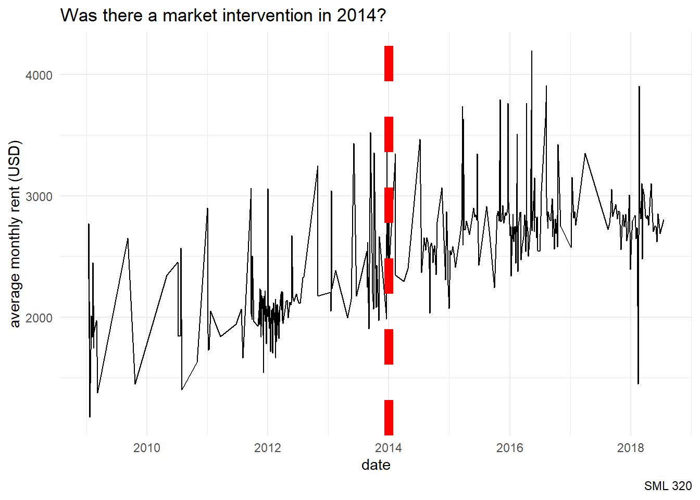
rent_ts |>
ggplot(aes(x = date, y = avg_price)) +
geom_line() +
geom_vline(xintercept = lubridate::ymd("20140101"),
color = "red", linetype = 2, linewidth = 3) +
labs(title = "Was there a market intervention in 2014?",
caption = "SML 320",
x = "date", y = "average monthly rent (USD)") +
theme_minimal()intervention_index <- which.max(rent_ts$year >= 2014)
pre_intervention <- c(1, intervention_index-1)
post_intervention <- c(intervention_index, nrow(rent_ts))
ts_impact <- CausalImpact::CausalImpact(rent_ts$avg_price,
pre_intervention,
post_intervention)summary(ts_impact)Posterior inference {CausalImpact}
Average Cumulative
Actual 2788 521273
Prediction (s.d.) 2301 (80) 430286 (14984)
95% CI [2156, 2469] [403170, 461701]
Absolute effect (s.d.) 487 (80) 90987 (14984)
95% CI [319, 632] [59572, 118103]
Relative effect (s.d.) 21% (4.2%) 21% (4.2%)
95% CI [13%, 29%] [13%, 29%]
Posterior tail-area probability p: 0.0012
Posterior prob. of a causal effect: 99.88024%
For more details, type: summary(impact, "report")The plot of an “impact” object returns a ggplot object!
plot(ts_impact)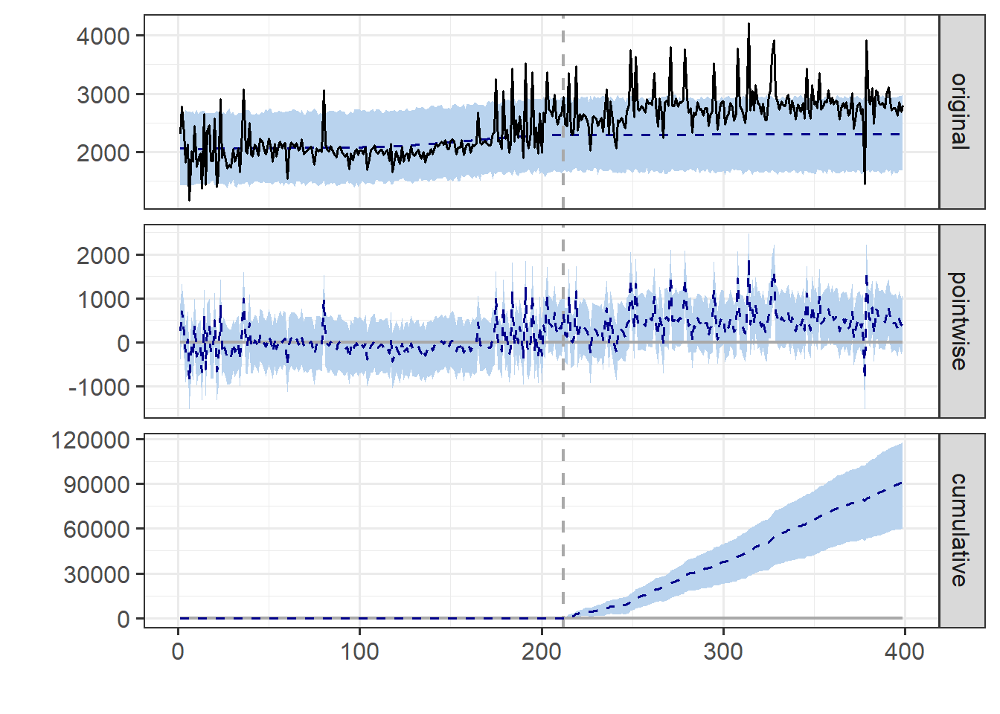
summary(ts_impact, "report")Analysis report {CausalImpact}
During the post-intervention period, the response variable had an average value of approx. 2.79K. By contrast, in the absence of an intervention, we would have expected an average response of 2.30K. The 95% interval of this counterfactual prediction is [2.16K, 2.47K]. Subtracting this prediction from the observed response yields an estimate of the causal effect the intervention had on the response variable. This effect is 0.49K with a 95% interval of [0.32K, 0.63K]. For a discussion of the significance of this effect, see below.
Summing up the individual data points during the post-intervention period (which can only sometimes be meaningfully interpreted), the response variable had an overall value of 521.27K. By contrast, had the intervention not taken place, we would have expected a sum of 430.29K. The 95% interval of this prediction is [403.17K, 461.70K].
The above results are given in terms of absolute numbers. In relative terms, the response variable showed an increase of +21%. The 95% interval of this percentage is [+13%, +29%].
This means that the positive effect observed during the intervention period is statistically significant and unlikely to be due to random fluctuations. It should be noted, however, that the question of whether this increase also bears substantive significance can only be answered by comparing the absolute effect (0.49K) to the original goal of the underlying intervention.
The probability of obtaining this effect by chance is very small (Bayesian one-sided tail-area probability p = 0.001). This means the causal effect can be considered statistically significant. Footnotes
Session Info
sessionInfo()R version 4.3.2 (2023-10-31 ucrt)
Platform: x86_64-w64-mingw32/x64 (64-bit)
Running under: Windows 10 x64 (build 19045)
Matrix products: default
locale:
[1] LC_COLLATE=English_United States.utf8
[2] LC_CTYPE=English_United States.utf8
[3] LC_MONETARY=English_United States.utf8
[4] LC_NUMERIC=C
[5] LC_TIME=English_United States.utf8
time zone: America/New_York
tzcode source: internal
attached base packages:
[1] stats graphics grDevices utils datasets methods base
other attached packages:
[1] gt_0.9.0 patchwork_1.1.2 lubridate_1.9.3 forcats_1.0.0
[5] stringr_1.5.1 dplyr_1.1.4 purrr_1.0.2 readr_2.1.5
[9] tidyr_1.3.1 tibble_3.2.1 ggplot2_3.4.3 tidyverse_2.0.0
[13] rstanarm_2.21.4 Rcpp_1.0.11 rstan_2.32.5 StanHeaders_2.32.5
[17] ggtext_0.1.2 bayesplot_1.10.0 bayesrules_0.0.2
loaded via a namespace (and not attached):
[1] BoomSpikeSlab_1.2.6 gridExtra_2.3 inline_0.3.19
[4] rlang_1.1.1 magrittr_2.0.3 snakecase_0.11.0
[7] matrixStats_1.0.0 e1071_1.7-13 compiler_4.3.2
[10] loo_2.6.0 callr_3.7.3 vctrs_0.6.5
[13] reshape2_1.4.4 pkgconfig_2.0.3 crayon_1.5.2
[16] fastmap_1.1.1 ellipsis_0.3.2 labeling_0.4.3
[19] utf8_1.2.4 threejs_0.3.3 promises_1.2.1
[22] rmarkdown_2.24 tzdb_0.4.0 markdown_1.8
[25] ps_1.7.5 nloptr_2.0.3 xfun_0.40
[28] jsonlite_1.8.7 later_1.3.1 bsts_0.9.10
[31] parallel_4.3.2 prettyunits_1.2.0 R6_2.5.1
[34] dygraphs_1.1.1.6 stringi_1.8.3 boot_1.3-28.1
[37] assertthat_0.2.1 knitr_1.43 CausalImpact_1.3.0
[40] zoo_1.8-12 base64enc_0.1-3 httpuv_1.6.11
[43] Matrix_1.6-1.1 splines_4.3.2 igraph_1.4.3
[46] timechange_0.3.0 tidyselect_1.2.0 rstudioapi_0.15.0
[49] yaml_2.3.8 codetools_0.2-19 miniUI_0.1.1.1
[52] curl_5.0.2 processx_3.8.1 Boom_0.9.15
[55] pkgbuild_1.4.0 lattice_0.21-9 plyr_1.8.8
[58] withr_3.0.0 shiny_1.7.5 groupdata2_2.0.2
[61] evaluate_0.21 survival_3.5-7 proxy_0.4-27
[64] RcppParallel_5.1.7 xml2_1.3.6 xts_0.13.1
[67] pillar_1.9.0 DT_0.28 stats4_4.3.2
[70] shinyjs_2.1.0 generics_0.1.3 hms_1.1.3
[73] rstantools_2.3.1 munsell_0.5.0 scales_1.2.1
[76] minqa_1.2.5 gtools_3.9.4 xtable_1.8-4
[79] class_7.3-22 glue_1.6.2 janitor_2.2.0
[82] tools_4.3.2 shinystan_2.6.0 lme4_1.1-33
[85] colourpicker_1.2.0 grid_4.3.2 QuickJSR_1.1.3
[88] crosstalk_1.2.0 colorspace_2.1-0 nlme_3.1-163
[91] cli_3.6.1 fansi_1.0.6 V8_4.3.0
[94] gtable_0.3.4 digest_0.6.33 farver_2.1.1
[97] htmlwidgets_1.6.2 htmltools_0.5.6 lifecycle_1.0.4
[100] mime_0.12 gridtext_0.1.5 shinythemes_1.2.0
[103] MASS_7.3-60